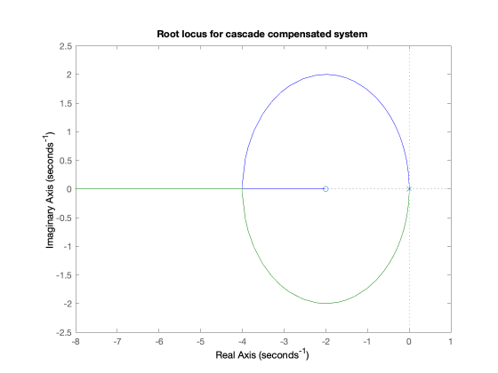
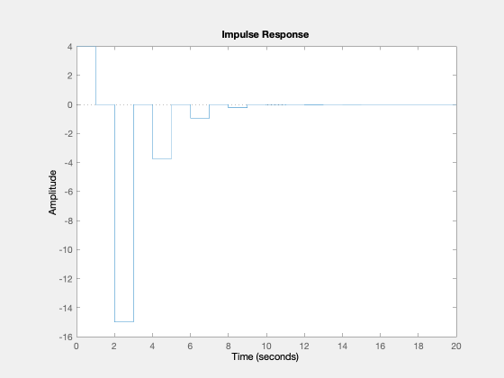
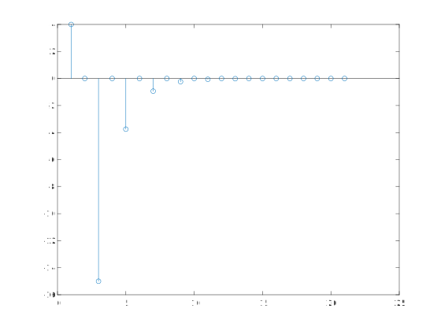
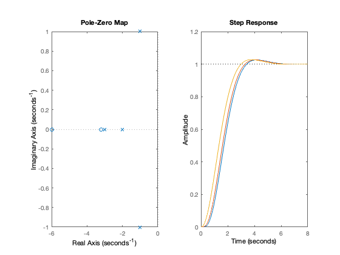

imatlab_export_fig('print-svg') % Static svg figures.
doc control
doc ctrlmodels
help tf
TF Construct transfer function or convert to transfer function.
Construction:
SYS = TF(NUM,DEN) creates a continuous-time transfer function SYS with
numerator NUM and denominator DEN. SYS is an object of type TF when
NUM,DEN are numeric arrays, of type GENSS when NUM,DEN depend on tunable
parameters (see REALP and GENMAT), and of type USS when NUM,DEN are
uncertain (requires Robust Control Toolbox).
SYS = TF(NUM,DEN,TS) creates a discrete-time transfer function with
sample time TS (set TS=-1 if the sample time is undetermined).
S = TF('s') specifies the transfer function H(s) = s (Laplace variable).
Z = TF('z',TS) specifies H(z) = z with sample time TS.
You can then specify transfer functions directly as expressions in S
or Z, for example,
s = tf('s'); H = exp(-s)*(s+1)/(s^2+3*s+1)
SYS = TF creates an empty TF object.
SYS = TF(M) specifies a static gain matrix M.
You can set additional model properties by using name/value pairs.
For example,
sys = tf(1,[1 2 5],0.1,'Variable','q','IODelay',3)
also sets the variable and transport delay. Type "properties(tf)"
for a complete list of model properties, and type
help tf.<PropertyName>
for help on a particular property. For example, "help tf.Variable"
provides information about the "Variable" property.
By default, transfer functions are displayed as functions of 's' or 'z'.
Alternatively, you can use the variable 'p' in continuous time and the
variables 'z^-1', 'q', or 'q^-1' in discrete time by modifying the
"Variable" property.
Data format:
For SISO models, NUM and DEN are row vectors listing the numerator
and denominator coefficients in descending powers of s,p,z,q or in
ascending powers of z^-1 (DSP convention). For example,
sys = tf([1 2],[1 0 10])
specifies the transfer function (s+2)/(s^2+10) while
sys = tf([1 2],[1 5 10],0.1,'Variable','z^-1')
specifies (1 + 2 z^-1)/(1 + 5 z^-1 + 10 z^-2).
For MIMO models with NY outputs and NU inputs, NUM and DEN are
NY-by-NU cell arrays of row vectors where NUM{i,j} and DEN{i,j}
specify the transfer function from input j to output i. For example,
H = tf( {-5 ; [1 -5 6]} , {[1 -1] ; [1 1 0]})
specifies the two-output, one-input transfer function
[ -5 /(s-1) ]
[ (s^2-5s+6)/(s^2+s) ]
Arrays of transfer functions:
You can create arrays of transfer functions by using ND cell arrays
for NUM and DEN above. For example, if NUM and DEN are cell arrays
of size [NY NU 3 4], then
SYS = TF(NUM,DEN)
creates the 3-by-4 array of transfer functions
SYS(:,:,k,m) = TF(NUM(:,:,k,m),DEN(:,:,k,m)), k=1:3, m=1:4.
Each of these transfer functions has NY outputs and NU inputs.
To pre-allocate an array of zero transfer functions with NY outputs
and NU inputs, use the syntax
SYS = TF(ZEROS([NY NU k1 k2...])) .
Conversion:
SYS = TF(SYS) converts any dynamic system SYS to the transfer function
representation. The resulting SYS is always of class TF.
See also TF/EXP, FILT, TFDATA, ZPK, SS, FRD, GENSS, USS, DYNAMICSYSTEM.
Documentation for tf
doc tf
Other functions named tf
DynamicSystem/tf idParametric/tf mpc/tf StaticModel/tf
H = tf([4, 0, -16],[1, 0, -0.25],-1)
H =
4 z^2 - 16
----------
z^2 - 0.25
Sample time: unspecified
Discrete-time transfer function.
step(H)

ys = step(H)
ys =
4.0000
4.0000
-11.0000
-11.0000
-14.7500
-14.7500
-15.6875
-15.6875
-15.9219
-15.9219
-15.9805
-15.9805
-15.9951
-15.9951
-15.9988
-15.9988
-15.9997
-15.9997
-15.9999
-15.9999
-16.0000
impulse(H)

yi = impulse(H)
yi =
4.0000
0
-15.0000
0
-3.7500
0
-0.9375
0
-0.2344
0
-0.0586
0
-0.0146
0
-0.0037
0
-0.0009
0
-0.0002
0
-0.0001
stem(yi)

stem(ys)

help residue
RESIDUE Partial-fraction expansion (residues).
[R,P,K] = RESIDUE(B,A) finds the residues, poles and direct term of
a partial fraction expansion of the ratio of two polynomials B(s)/A(s).
If there are no multiple roots,
B(s) R(1) R(2) R(n)
---- = -------- + -------- + ... + -------- + K(s)
A(s) s - P(1) s - P(2) s - P(n)
Vectors B and A specify the coefficients of the numerator and
denominator polynomials in descending powers of s. The residues
are returned in the column vector R, the pole locations in column
vector P, and the direct terms in row vector K. The number of
poles is n = length(A)-1 = length(R) = length(P). The direct term
coefficient vector is empty if length(B) < length(A), otherwise
length(K) = length(B)-length(A)+1.
If P(j) = ... = P(j+m-1) is a pole of multplicity m, then the
expansion includes terms of the form
R(j) R(j+1) R(j+m-1)
-------- + ------------ + ... + ------------
s - P(j) (s - P(j))^2 (s - P(j))^m
[B,A] = RESIDUE(R,P,K), with 3 input arguments and 2 output arguments,
converts the partial fraction expansion back to the polynomials with
coefficients in B and A.
Warning: Numerically, the partial fraction expansion of a ratio of
polynomials represents an ill-posed problem. If the denominator
polynomial, A(s), is near a polynomial with multiple roots, then
small changes in the data, including roundoff errors, can make
arbitrarily large changes in the resulting poles and residues.
Problem formulations making use of state-space or zero-pole
representations are preferable.
Class support for inputs B,A,R:
float: double, single
See also POLY, ROOTS, DECONV.
Documentation for residue
doc residue
[r,p,k] = residue([4,0,-16],[1,0,-0.25])
r =
-15
15
p =
0.5000
-0.5000
k =
4
[r,p,k] = residue(conv([1, 0],[4,0,-16]),conv([1, -1],[1,0,-0.25]))
r =
-16.0000
15.0000
5.0000
p =
1.0000
0.5000
-0.5000
k =
4
U = tf([1, 0], [1, -1], -1)
Y = series(U, H)
U =
z
-----
z - 1
Sample time: unspecified
Discrete-time transfer function.
Y =
4 z^3 - 16 z
-------------------------
z^3 - z^2 - 0.25 z + 0.25
Sample time: unspecified
Discrete-time transfer function.
[num,den] = tfdata(Y,'v')
num =
4 0 -16 0
den =
1.0000 -1.0000 -0.2500 0.2500
[r,p,k]=residue(num,den)
r =
-16.0000
15.0000
5.0000
p =
1.0000
0.5000
-0.5000
k =
4
cd matlab
digiresp_model